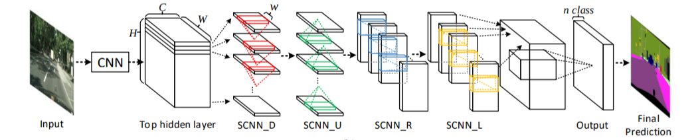

SCNN
Table of Contents
1 SCNN
https://arxiv.org/pdf/1712.06080.pdf
SCNN 是一个针对车道线识别的语义分割模型.
1.1 Tusimple Dataset
https://github.com/TuSimple/tusimple-benchmark
tusimple dataset 格式为:
{
"lanes": [
[-2, -2, -2, -2, -2, -2, -2, -2, -2, -2, 587, 611, 600, 587, 574, 562, 549,
536, 523, 510, 497, 484, 472, 459, 446, 433, 420, 407, 395, 382, 369, 356,
343, 330, 317, 305, 292, 279, 266, 253, 240, 227, 215, 202, 189, 176, 163,
150, 137, 125, 112, 99, 86, 73, 60, 47],
[-2, -2, -2, -2, -2, -2, -2, -2, -2, -2, 634, 665, 679, 693, 708, 717, 727,
737, 747, 756, 766, 776, 785, 795, 805, 815, 824, 834, 844, 853, 863, 873,
883, 892, 902, 912, 921, 931, 941, 950, 960, 970, 980, 989, 999, 1009, 1018,
1028, 1038, 1048, 1057, 1067, 1077, 1086, 1096, 1106],
[-2, -2, -2, -2, -2, -2, -2, -2, -2, -2, 685, 730, 766, 797, 828, 858, 889,
919, 950, 981, 1011, 1042, 1073, 1103, 1134, 1164, 1195, 1226, 1256, -2, -2,
-2, -2, -2, -2, -2, -2, -2, -2, -2, -2, -2, -2, -2, -2, -2, -2, -2, -2, -2,
-2, -2, -2, -2, -2, -2]
],
"h_samples": [160, 170, 180, 190, 200, 210, 220, 230, 240, 250, 260, 270, 280, 290,
300, 310, 320, 330, 340, 350, 360, 370, 380, 390, 400, 410, 420, 430,
440, 450, 460, 470, 480, 490, 500, 510, 520, 530, 540, 550, 560, 570,
580, 590, 600, 610, 620, 630, 640, 650, 660, 670, 680, 690, 700, 710],
"raw_file": "hello_tusimple.jpg"
}
上面的 json 显示三条车道线线上的 56 个采样点的坐标, 例如:
第一条车道线的点为: (587,260), (611, 270), (600, 280)… 第二条车道线的点为: (634,260), (665, 270), (679, 280)… 第二条车道线的点为: (685,260), (730, 270), (766, 280)…
每条 "lane" 中的负数坐标例如 -2 表示该车道线在该位置没有点. 这个样本中每条国道的 前 10 个点都是负数, 意味着图片的上面部分没有车道线, 因为这部分通常是天空背景.
tusimple dataset 标注的是车道线上的点的坐标, 但更多的数据集例如 culane (https://xingangpan.github.io/projects/CULane.html) 标注的直接是代表图片分割信息 的 png 图片
1.2 Label
模型的 label 称为 prob_map, 它的格式为: (H, W, class), 用来表示图片中的每个点所 属的 class (背景, 车道线 0, 车道线 1, … ), 语义分割模型实际是一个逐像素 (per-pixel) 的分类模型.
有的数据集例如 culane 提供的标签直接就是 (H, W, class) 的格式. 由于 tusimple 提 供的是坐标的形式, 需要预处理一下, 这里用了一个有些 trick 的方法:
- 用 cv2 生成一个全 0 的图片
- 针对每一条车道线, 用 cv2.line 把点依次连接起来, 而且用车道线的类别的做为 line color
- 把图片保存为 png, 即可得到和 culane 同样的标签数据.
- 训练时用 cv2 读取 png, 但只需要读取 rgb 中的某一个值 (例如 r) 做为该像素的 class label 即可
1.3 Network

scnn 网络结构分为三部分:
- backbone
- message_passing
- upsample
1.3.1 backbone
backbone 使用 vgg16 的特征提取部分, 但删除 33, 43 层 maxpooling, 因为 pooling 导 致空间信息丢失; 同时替换了最后几层 conv2d 为 dilated conv2d, 因为删除 pooling 会 导致 receptive field 变小, 通过 dilated conv2d 可以增加改善这种情况.
关于 pooling 与 semantic segmentation 可以参考: fcn for semantic segmentation 2015/3
关于 dilated conv2d 与 semantic segmentation 可以参考: dilated_net 2016/4, deeplab 2017/5
# 输出 img resize 为 [1, 3, 288, 800] x = self.backbone(img) # x: [1, 512, 36, 100]
1.3.2 message_passing
# layer1, layer2 基本都是普通的 conv2d x = self.layer1(x) # x: [1, 128, 36, 100] x = self.message_passing_forward(x) # x: [1, 128, 36, 100] x = self.layer2(x) # x: [1, 5, 36, 100]
message_passing_forward 是 SCNN 最核心的部分, 一共需要做 4 遍 message_passing: up, down, left, right
以 down 为例, 计算步骤:
- 按 H 方向切成 H 个 (C,1,W) 的 slice
- out[0]=slice[0]
- out[1]=slice[1]+conv(out[0])
- out[2]=slice[2]+conv(out[1])
…
计算完以后 out shape 和 input shape 是一样的, 因为每一层 slice 时每层使用的 conv 都是使用的同一个 conv, 且:
- stride = 1
- padding=k//2
- k 为奇数
所以 O=(I+2p-k)//s+1=I
另外整个过程和 rnn 很像: slice 是 input 序列, out 是 hidden state 序列
按论文的说法, 这样操作更容易捕获长条形状的物体 (比如车道线) 或大的物体的空间信息
Intuition:
为了让 cnn 能捕获大物体的信息, 需要有较大的 receptive field:
- 通过 pooling
- 通过更大的 kernel
前者会导致信息丢失, 后者计算量太大
SCNN 的作法是通过类似 rnn 的作法让空间中不同位置的信息能传递(合并)在一起, 让网络 能看到整个空间的信息
1.3.3 upsample
# interpolate 在这里是在做 up sampling, 36*8=288, 100*8=800 # # 在 semantic segmentation 网络中最后都需要 up sampling 操作, 才能生成针 # 对每个像素的 prob_map # # 如果暂时忽略 message_passing_forward 不关注, scnn 实际就是不断的做 # conv2d, 把 channel 降成 5 之后, 再做一个 up sampling 恢复原始的尺寸 # seg_pred = F.interpolate(x, scale_factor=8, mode="bilinear", align_corners=True) # seg_pred: [1, 5, 288, 800] x = self.layer3(x) # x: [1, 5, 18, 50] x = x.view(-1, self.fc_input_feature) # x: [1, 4500] exist_pred = self.fc(x) # exist_pred: [1, 4]
1.4 Inference
scnn 的输出有两个: seg_pred 和 exist_pred
seg_pred: [5, 288, 800], 表示每一个像素所属 class 的概率.
0 表示属于 backgroud 的概率, 即这个像素不属于任何一条车道线. 1 表示属于车道线 0 的概率 … 4 表示属于车道线 3 的概率, 一共有 4 条车道线
exist_pred: [1, 4], 表示检测到有相应车道的概率
seg_pred 这种针对所有像素的分类概率叫做 prob_map. lane detection 本质上是一个语 义分割的问题
有了 prob_map 后, 那些 argmax(prob_map,axis=0) == 1 的点就是预测出来的车道线 0 上的点
1.5 Loss
scnn 的 loss 基本上就是针对每个像素计算 cross entropy loss 即可
Backlinks
Semantic Segmentation (Semantic Segmentation > SCNN): SCNN